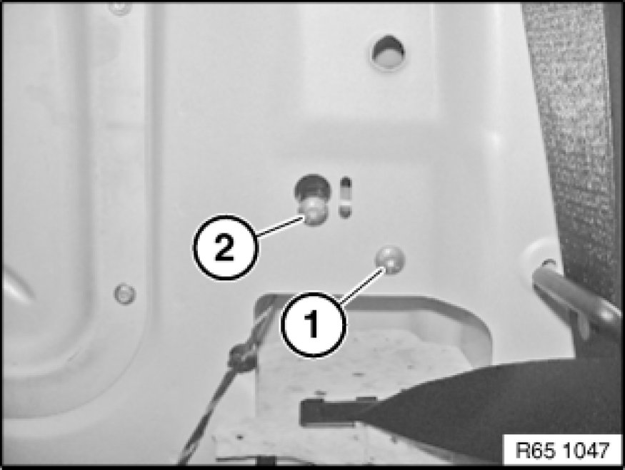
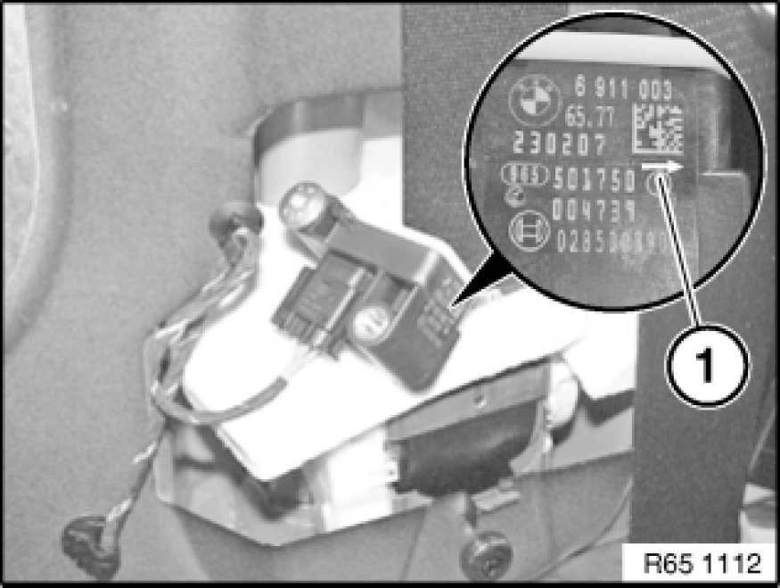
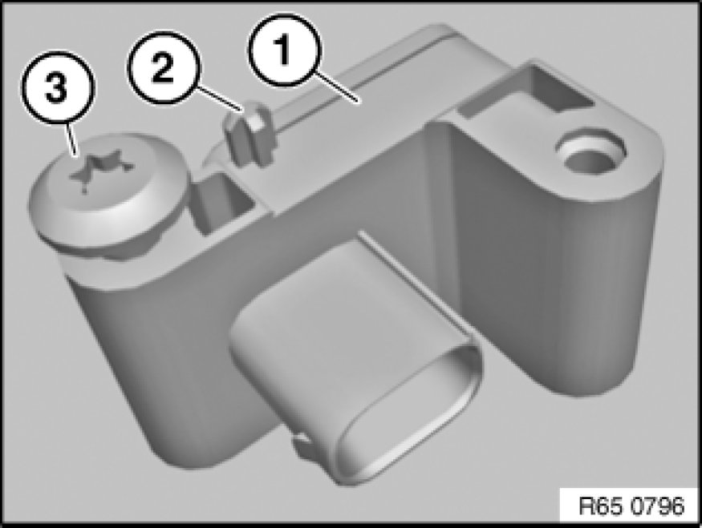

65 77 720 Removing and Installing/Replacing Left B-pillar Sensor
65 77 720 - Removing and installing (replacing) left B-pillar sensor

Warning!
Note airbag safety instructions [1][2]Safety Regulations For Handling Components With Gas Generators!
Incorrect handling can activate airbag and cause injury.

Important!
Read and comply with notes on protection against electrostatic damage (ESD protection) 61 35 ... Notes on ESD Protection (Electro Static Discharge)!

Necessary preliminary tasks:
- Disconnect battery negative lead 61 20 900 Disconnecting and Connecting Battery Negative Lead and cover
- Remove rear side trim panel Removing and Installing Rear Left or Right Side Trim Panel

Release screw (1).
Loosen screw (2).
Installation Note:
Tightening torque 65 77 5AZ 65 77 Airbag Triggering Control.
Feed out B-pillar sensor and disconnect associated plug connection.

Important!
Direction arrow (1) must point when viewed in direction of travel outwards!

Installation Note:
Establish correct positioning of B-pillar sensor (1) by means of guide pin (2) and screw (3).